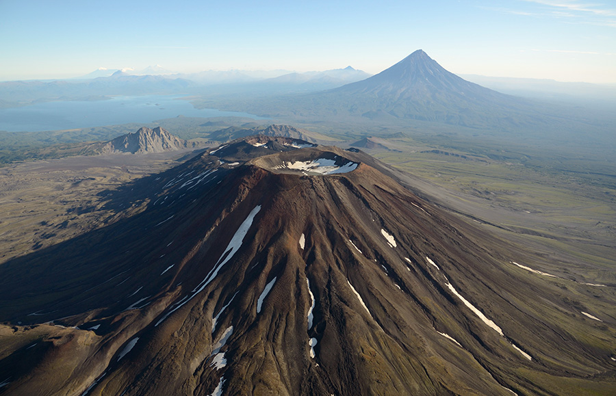
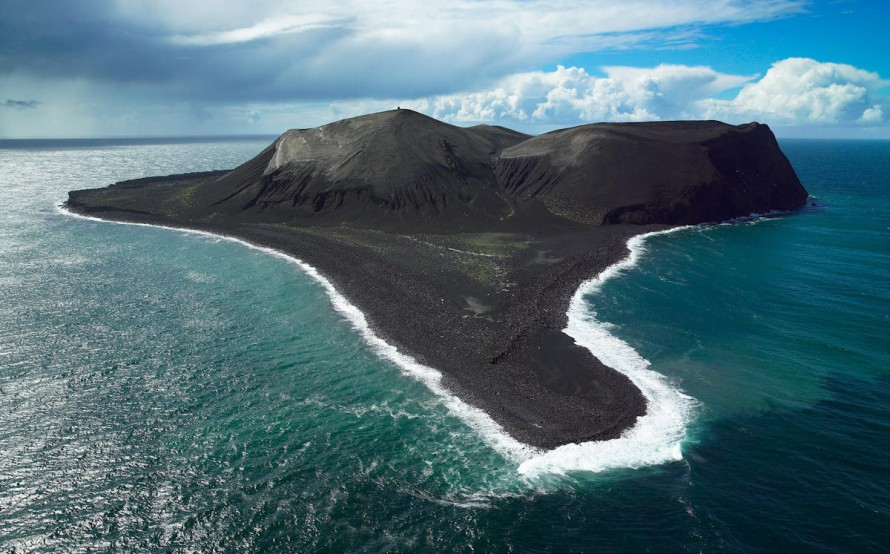
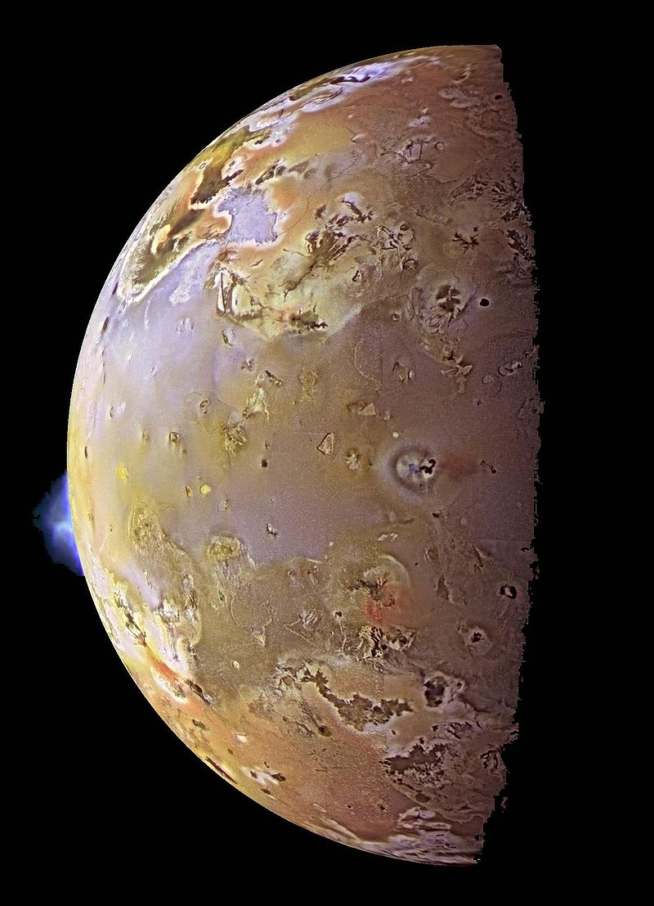

Вулкан
Вулкан— эффузивное геологическое образование, имеющее выводное отверстие (жерло, кратер, кальдера) или трещины, из которых горячая лава и вулканические газы поступают на поверхность из недр планеты, или поступали ранее. Возвышенность, сложенная эффузивными горными породами. Вулканы возникают на земной коре и других планетах, где магма выходит на поверхность, выделяя различные продукты вулканизма, которые образуют холмы и горы.
Вулканическая активность
Вулканы на Земле делятся на два типа:
- Активные вулканы (действующие) — извергавшиеся в исторический период времени или в течение голоцена (в последние 10 тысяч лет). Некоторые активные вулканы могут считаться спящими, но на них ещё возможны извержения.
- Неактивные вулканы (потухшие) — древние вулканы, потерявшие свою активность.
На суше насчитывается около 900 активных вулканов, в морях и океанах их число уточняется. Период извержения вулкана может продолжаться от нескольких дней до нескольких миллионов лет.
На других планетах
Астрофизики, в историческом аспекте, считают, что вулканическая активность, вызванная, в свою очередь, приливным воздействием других небесных тел, может способствовать появлению жизни. В частности, именно вулканы внесли вклад в формирование земной атмосферы и гидросферы, выбросив значительное количество углекислого газа и водяного пара. Так, например, в 1963 году в результате извержения подводного вулкана у юга Исландии возник остров Сюртсей, который в настоящее время является площадкой для научных исследований по наблюдению зарождения жизни.
Вулканическое извержение
Извержения вулканов относятся к геологическим чрезвычайным ситуациям, которые нередко приводят к стихийным бедствиям. Процесс извержения может длиться от нескольких часов до многих лет.
Под извержением понимается процесс поступления из недр на поверхность значительного количества раскалённых и горячих вулканических продуктов в газообразном, жидком и твёрдом состоянии. При извержениях формируются вулканические постройки — характерной формы возвышенности, приуроченные к каналам и трещинам, по которым из магматических очагов поступают на поверхность продукты извержения. Обычно они имеют форму конуса с углублением — кратером на вершине. В случае её проседания и обрушения образуется кальдера — обширная циркообразная котловина с крутыми стенками и относительно ровным дном.
Среди различных классификаций выделяются общие типы извержений:
- Гавайский тип — выбросы жидкой базальтовой лавы, часто образуются лавовые озёра, лавовый поток может растекаться на большие расстояния.
- Стромболийский тип — лава более густая и выбрасывается из жерла частыми взрывами. Характерно образование конусов из пепла, вулканических бомб и лапилли.
- Плинианский тип — мощные редкие взрывы, способные выбросить тефру на высоту до нескольких десятков километров.
- Пелейский тип — извержения, отличительным признаком которых является образование экструзивных куполов и пирокластических потоков («палящих туч»).
- Газовый (фреатический) тип — извержения, при которых кратера достигают только вулканические газы и происходит выброс твёрдых пород. Магма не наблюдается.
- Подводный тип — извержения, происходящие под водой. Как правило, сопровождаются выбросами пемзы.
Поствулканические явления
Фумаролы на о. Вулькано, Италия После извержений, когда активность вулкана либо прекращается навсегда, либо он «дремлет» в течение тысяч лет, на самом вулкане и его окрестностях сохраняются процессы, связанные с остыванием магматического очага и называемые поствулканическими.
К ним относят:
- фумаролы
- термы
- гейзеры
- рязевые вулканы
Во время извержений иногда происходит обрушение вулканического сооружения с образованием кальдеры — крупной впадины диаметром до 16 км и глубиной до 1000 м. При подъёме магмы внешнее давление ослабевает, связанные с ней газы и жидкие продукты вырываются на поверхность, и происходит извержение вулкана. Если на поверхность выносится не магма, а древние горные породы, и среди газов преобладает водяной пар, образовавшийся при нагревании подземных вод, то такое извержение называют фреатическим.
Внеземные вулканы
Извержение на Ио (спутник) Вулканы имеются не только на Земле, но и на других планетах и их спутниках. Первой по высоте горой Солнечной системы является марсианский вулкан Олимп высотой 21,2 км. В Солнечной системе наибольшей вулканической активностью обладает спутник Юпитера Ио. Длина шлейфов вещества, извергаемого вулканами Ио, достигает высоты 330 км и радиуса 700 км (патеры Тваштара), лавовые потоки — длины в 330 км (вулканы Амирани и Масуби). На некоторых спутниках планет (Энцелад и Тритон) в условиях низких температур извергаемая «магма» состоит не из расплавленных скальных пород, а из воды и лёгких веществ. Такой тип извержений отнести к обычному вулканизму нельзя, потому данное явление получило название криовулканизм.
